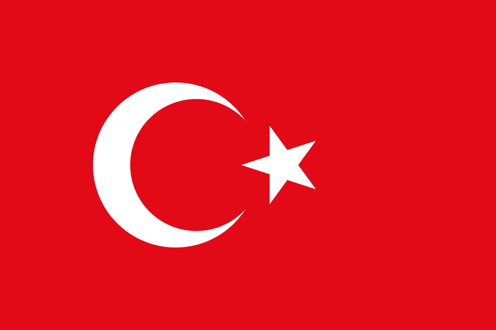

Turkey (Turkish: Türkiye [ˈtyɾcije]), officially the Republic of Turkey (Turkish: Türkiye Cumhuriyeti [ˈtyɾcije d͡ʒumˈhuɾijeti] (About this soundlisten)), is a transcontinental country located mainly in Western Asia, with a smaller portion on the Balkan peninsula in Southeast Europe. East Thrace, located in Europe, is separated from Anatolia by the Sea of Marmara, the Bosphorous strait and the Dardanelles (collectively called the Turkish Straits). [7] Turkey is bordered by Greece and Bulgaria to its northwest; Georgia to its northeast; Armenia, the Azerbaijani exclave of Nakhchivan and Iran to the east; and Iraq and Syria to the south. Ankara is its capital but Istanbul is the country's largest city.[8] Approximately 70 to 80 per cent of the country's citizens identify as Turkish.[9][10] Kurds are the largest minority; the size of the Kurdish population is a subject of dispute with estimates placing the figure at anywhere from 12 to 25 per cent of the population.  At various points in its history, the region has been inhabited by diverse civilizations including the Assyrians, Greeks, Thracians, Phrygians, Urartians, and Armenians.[11][12][13] Hellenization started during the era of Alexander the Great and continued into the Byzantine era.[12][14] The Seljuk Turks began migrating into the area in the 11th century, and their victory over the Byzantines at the Battle of Manzikert in 1071 symbolizes the start and foundation of Turkey.[15] The Seljuk Sultanate of Rûm ruled Anatolia until the Mongol invasion in 1243, when it disintegrated into small Turkish principalities.[16] Beginning in the late 13th-century, the Ottomans started uniting these Turkish principalities. After Mehmed II conquered Constantinople in 1453, Ottoman expansion continued under Selim I. During the reign of Suleiman the Magnificent the Ottoman Empire encompassed much of Southeast Europe, West Asia and North Africa and became a world power.[11][17][18] In the following centuries the state entered a period of decline with a gradual loss of territories and wars.[19] In an effort to consolidate the weakening social and political foundations of the empire, Mahmut II started a period of modernisation in the early 19th century, bringing reforms in all areas of the state including the military and bureaucracy along with the emancipation of all citizens.[20] In 1913, a coup d'état effectively put the country under the control of the Three Pashas. During World War I, the Ottoman government committed genocides against its Armenian, Assyrian and Pontic Greek subjects.[I][23] Following the war, the conglomeration of territories and peoples that formerly comprised the Ottoman Empire was partitioned into several new states.[24] The Turkish War of Independence, initiated by Mustafa Kemal Atatürk and his colleagues against occupying Allied Powers, resulted in the abolition of monarchy in 1922 and the establishment of the Republic of Turkey in 1923, with Atatürk as its first president.[25] Atatürk enacted numerous reforms, many of which incorporated various aspects of Western thought, philosophy, and customs into the new form of Turkish government.[26] The Kurdish–Turkish conflict, an armed conflict between the Republic of Turkey and Kurdish insurgents, has been active since 1984 primarily in the southeast of the country. Various Kurdish groups demand separation from Turkey to create an independent Kurdistan or to have autonomy and greater political and cultural rights for Kurds in Turkey. Turkey is a charter member of the UN, an early member of NATO, the IMF and the World Bank, and a founding member of the OECD, OSCE, BSEC, OIC and G-20. After becoming one of the first members of the Council of Europe in 1949, Turkey became an associate member of the EEC in 1963, joined the EU Customs Union in 1995 and started accession negotiations with the European Union in 2005 which have been effectively stopped by the EU in 2017 due to "Turkey’s path toward autocratic rule".[27] Turkey's economy and diplomatic initiatives led to its recognition as a regional power while its location has given it geopolitical and strategic importance throughout history.[28][29] Turkey is a secular, unitary, formerly parliamentary republic which adopted a presidential system with a referendum in 2017; the new system came into effect with the presidential election in 2018. Turkey's current administration headed by president Recep Tayyip Erdoğan of the AKP has enacted measures to increase the influence of Islam, reversed and undermined Kemalist policies, and has reversed earlier reforms such as freedom of the press.[30][31]